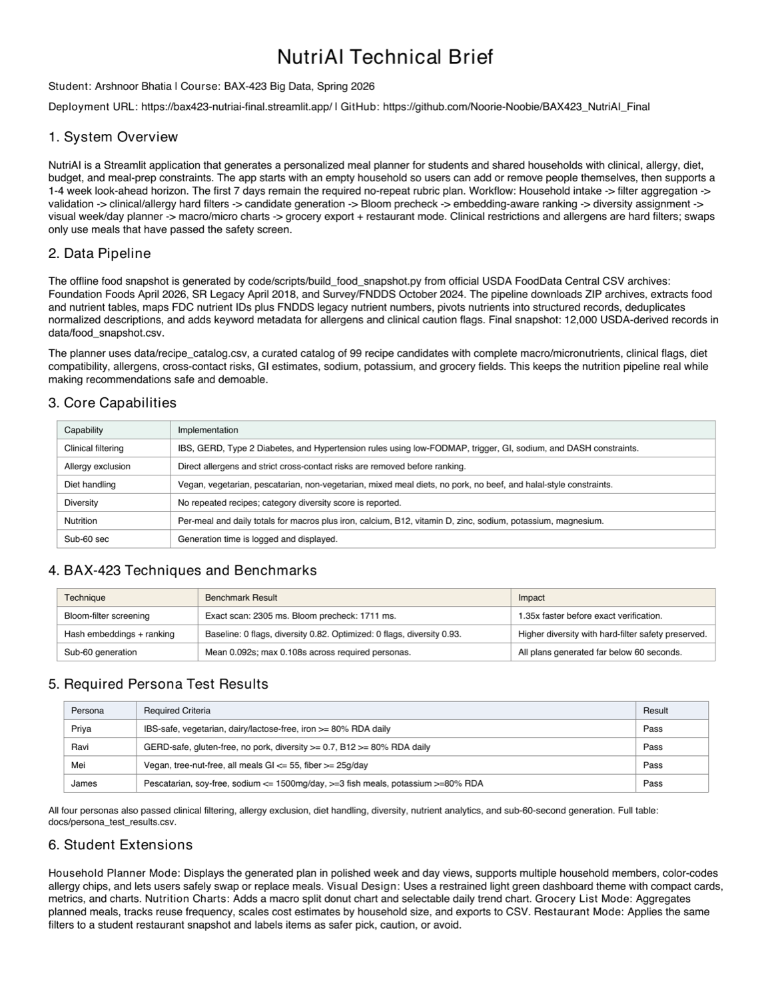

Health-tech recommender system
NutriAI
A safety-first meal-planning app that generates personalized 7-day household meal plans using clinical filters, allergy exclusions, nutrition analytics, and recommendation ranking.

Problem
People with clinical conditions, allergies, and household dietary constraints need meal plans that are safe, diverse, nutritionally balanced, and explainable.
What I Built
- Built a Streamlit application with household intake, calendar planning, nutrition dashboard, grocery planner, restaurant-risk mode, and downloads.
- Implemented hard filters for allergies, cross-contact, clinical conditions, diet types, and cultural restrictions before ranking meals.
- Used Bloom-filter-style token screening, hash-embedding preference similarity, multi-factor scoring, diversity-aware assignment, and nutrient rebalancing.
Evidence
- 12,000-row USDA-derived food snapshot, 99 structured meal candidates, and 18 restaurant-style menu records.
- Persona tests passed for IBS, GERD, diabetes, and hypertension profiles.
- Mean generation time was about 0.092 seconds across required personas.
Tech Stack
PythonStreamlitPandasUSDA FoodData CentralBloom filtersHash embeddingsRecommendation rankingNutrition analytics